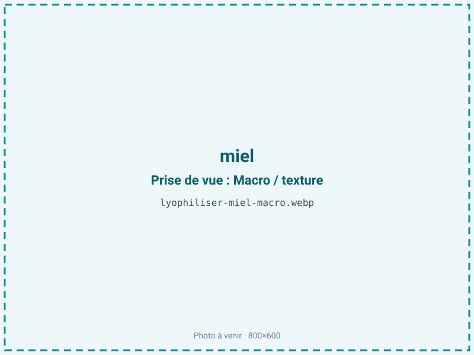
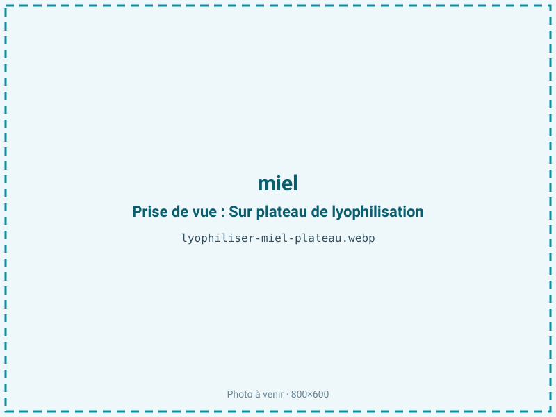
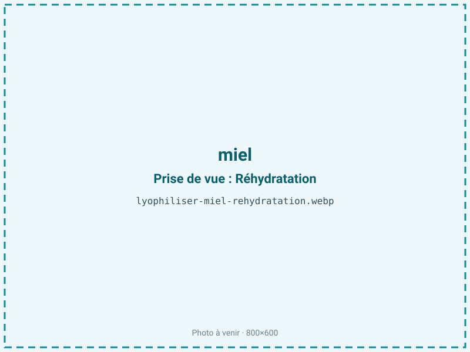

Lyophiliser du miel
Le miel ne contient que 18 % d'eau mais reste impossible à réduire en poudre stable sans support : ses sucres collent et repompent l'humidité de l'air. Lyophilisé avec un porteur, il devient une poudre sèche et dosable pour l'enrobage, le snacking et la nutrition sportive. Le procédé est délicat et exige un essai pilote.
En bref
Comment miel se comporte à la lyophilisation
Le miel est une solution sursaturée de sucres : environ 38 % de fructose, 31 % de glucose, 18 % d'eau, pour une aw naturelle de 0,50 à 0,60. Sa difficulté tient à la température de transition vitreuse très basse de ses sucres — celle du fructose avoisine 5 °C. À la congélation, le miel ne forme donc pas de cristaux de glace nets : il se fige en un verre amorphe très visqueux dont peu d'eau est réellement congelable.
En sublimation, dès que la température dépasse ce seuil vitreux, la matrice s'effondre (collapse), passe à l'état caoutchouteux et referme ses pores : on obtient une masse caramel collante, pas une poudre. C'est le fructose, au seuil le plus bas, qui gouverne cet effondrement. L'ajout d'un porteur comme la maltodextrine, à transition vitreuse élevée, relève le seuil du mélange et lui donne une ossature. Sans support, la lyophilisation d'un miel pur échoue quasi systématiquement.
Paramètres de cycle
Formuler d'abord un mélange miel-porteur : une maltodextrine de faible DE, à hauteur de 40 à 60 % des solides, relève la température de transition vitreuse et structure le gâteau. Congeler très bas, −40 °C, pour figer complètement la matrice amorphe. Étaler en couche mince et conduire la sublimation primaire en gardant le produit sous son seuil de collapse — c'est le point le plus délicat, une clayette trop chaude ruine le lot.
Le cycle est variable et souvent long, l'eau étant liée aux sucres. La cible d'aw de 0,50 à 0,60 peut sembler haute : c'est que les sucres retiennent physiquement l'eau, même après séchage. Le miel étant maigre (moins de 2 % de lipides), une aw plus basse serait chimiquement favorable, mais la matrice sucrée l'empêche en pratique. Chaque miel se comporte différemment : l'essai pilote est indispensable.
Pièges connus
- Sucres très hygroscopiques : collapse fréquent.
- Souvent besoin d'un support (maltodextrine) ou d'un mélange.



Variantes & provenance
L'origine florale est déterminante par son rapport fructose/glucose. Un miel d'acacia, très riche en fructose, reste liquide et s'effondre plus facilement : il réclame davantage de porteur. Un miel de colza ou de tournesol, plus riche en glucose, cristallise spontanément et se prête un peu mieux au séchage. Les miellats (miel de forêt) et les miels de bruyère ont des comportements encore différents. L'état de départ compte aussi : un miel déjà cristallisé, plus structuré, ne se traite pas comme un miel liquide. La teneur en eau, variable selon la récolte, ajuste la durée de cycle.
Conservation & DLUO
Le facteur limitant n'est pas l'oxydation — le miel est maigre — mais la reprise d'humidité : les sucres amorphes de la poudre sont extrêmement hygroscopiques. À la moindre exposition, la poudre s'agglomère, prend en masse et retourne à l'état sirupeux. Un conditionnement en barrière hermétique, avec dessiccant, est impératif, et le stockage doit se faire en atmosphère sèche. La DLUO est variable selon la formulation : plus la part de porteur est élevée, plus la poudre est stable. Chimiquement, une aw plus basse resterait favorable, sans risque de rancissement, mais elle est difficile à atteindre à cause des sucres. Un stockage au frais et au sec, à faible humidité relative, prolonge nettement la tenue.
Variable selon la formulation ; barrière hermétique impérative.
Estimez selon votre emballage :
Face aux autres procédés de séchage
Au séchage à l'air ou à chaud, le miel caramélise : la couleur fonce et le taux de HMF (hydroxyméthylfurfural), marqueur réglementaire de surchauffe, grimpe. Le micro-ondes sous vide risque de brûler localement les sucres. La lyophilisation avec porteur est la seule voie vers une poudre claire qui conserve l'arôme du miel cru et ses enzymes — diastase, invertase — que la chaleur détruirait. C'est aussi le seul procédé qui ne fait pas monter le HMF, un argument de qualité pour un miel positionné haut de gamme.
Marchés & applications
Poudre de miel pour l'enrobage de barres et de céréales, snacking, panification, mélanges secs pour boissons, et surtout nutrition sportive où le miel apporte des glucides rapides sous forme dosable et non collante. Les clients types sont les fabricants de compléments et de barres énergétiques, les industriels du snacking et les boulangers-pâtissiers cherchant un sucrant aromatique en poudre.
- Poudre de miel
- Enrobage et snacking
- Nutrition sportive
Questions fréquentes — miel
Peut-on lyophiliser du miel pur ?
Très difficilement : sans support, ses sucres s'effondrent et donnent une masse collante, pas une poudre. Un porteur est presque toujours nécessaire.
Pourquoi ajouter de la maltodextrine ?
Elle relève la température de transition vitreuse du mélange et lui donne une structure, ce qui empêche l'effondrement pendant la sublimation.
La poudre est-elle 100 % miel ?
Non si elle contient un porteur. On peut moduler la proportion, mais un miel pur en poudre stable est très rare.
La poudre reprend-elle l'humidité ?
Oui, fortement : les sucres amorphes sont très hygroscopiques. Barrière hermétique et dessiccant sont indispensables.
Garde-t-elle le goût du miel cru ?
Oui : sans chaleur, les arômes et les enzymes sont préservés et le taux de HMF ne monte pas, contrairement à un séchage à chaud.
Quel est le ratio ?
Environ 1,3:1 pour le miel seul, car il ne contient que 18 % d'eau ; l'ajout de porteur modifie ce rendement.
Pourquoi un essai pilote est-il nécessaire ?
Parce que chaque miel, selon son rapport fructose/glucose, s'effondre différemment et demande une formulation de porteur spécifique.
Prochaine étape : envoyez-nous 200 g
Vous avez les repères du miel. La suite logique : nous envoyer un échantillon et repartir avec une fiche technique sur votre produit — rendement, aw finale, coût au kilo.
Tester du miel — 250 à 500 €Déductible de votre premier lot.